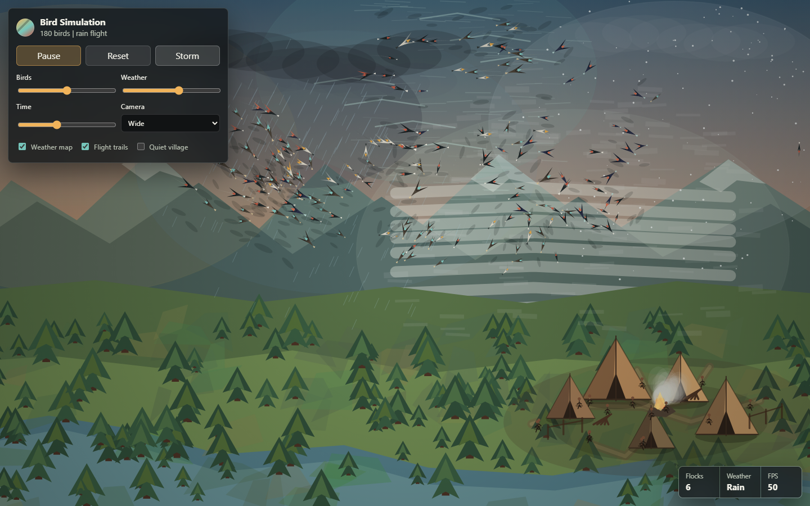
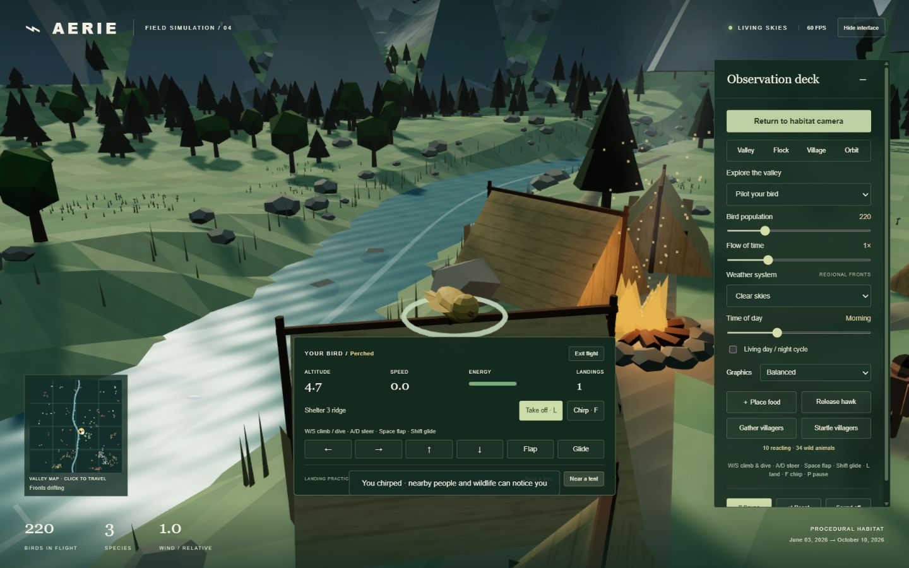

ORIGINAL · JUNE 03, 2026
The first habitat
The recovered Canvas simulation, preserved unchanged. Flying flocks, walking villagers, fire, smoke and regional weather.
Open original →The same idea, two generations: flocks of birds, an early human village, and weather that moves through the landscape.

The recovered Canvas simulation, preserved unchanged. Flying flocks, walking villagers, fire, smoke and regional weather.
Open original →
A fully procedural 3D valley. Pilot your own bird, land on trees and tents, meet reactive villagers, and explore deer, rabbits and river fish alongside regional weather and the flock.
Enter the valley →